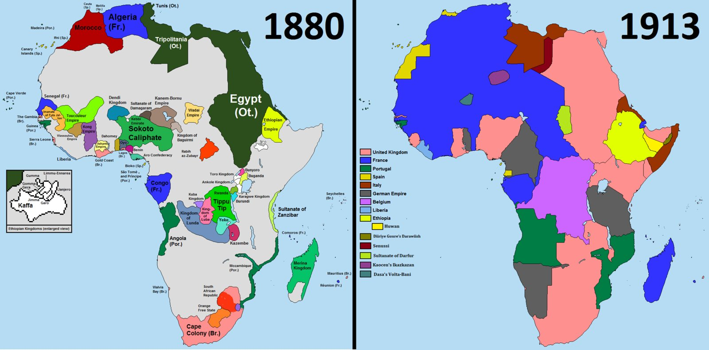
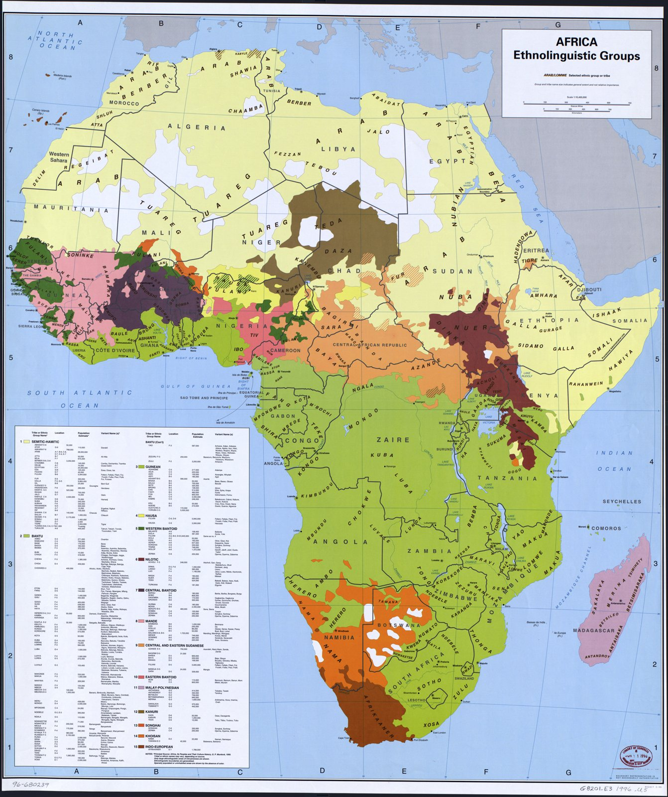
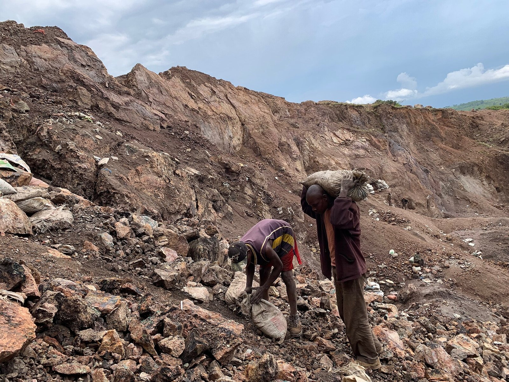
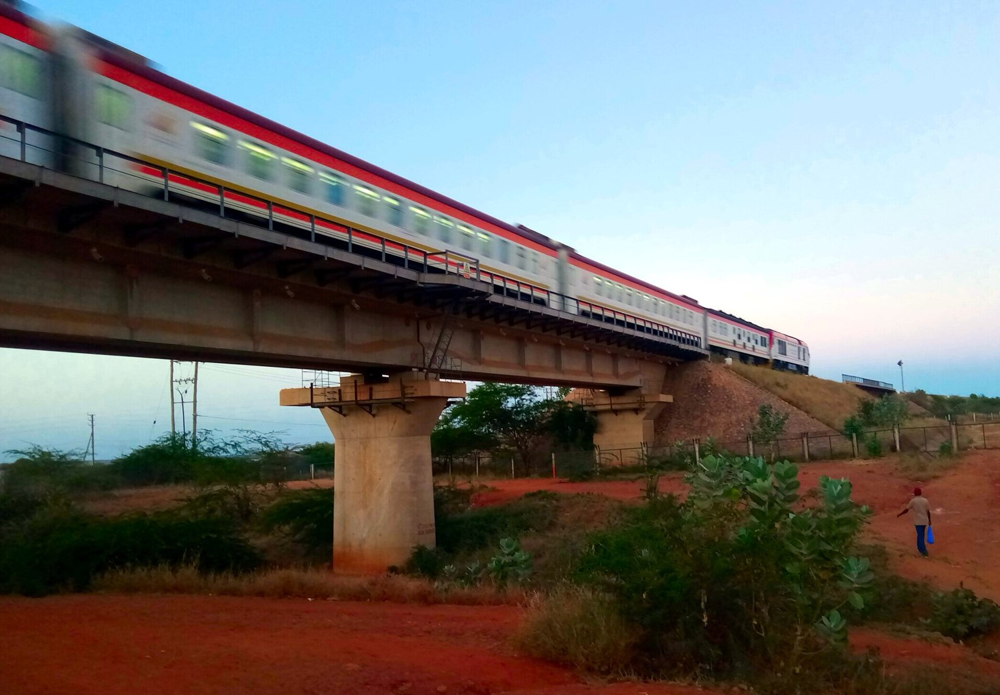
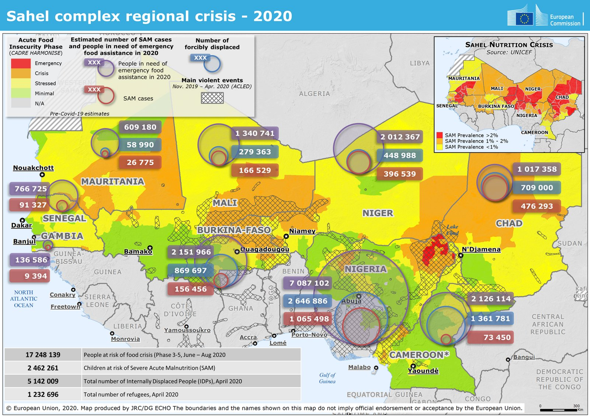
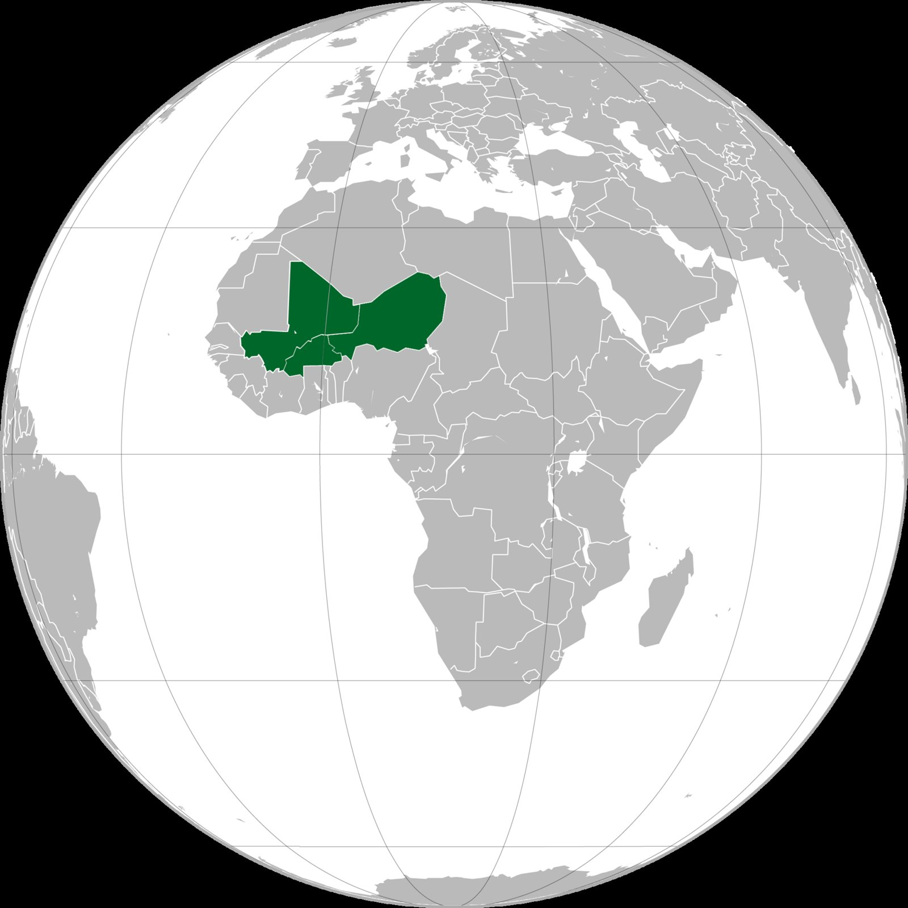
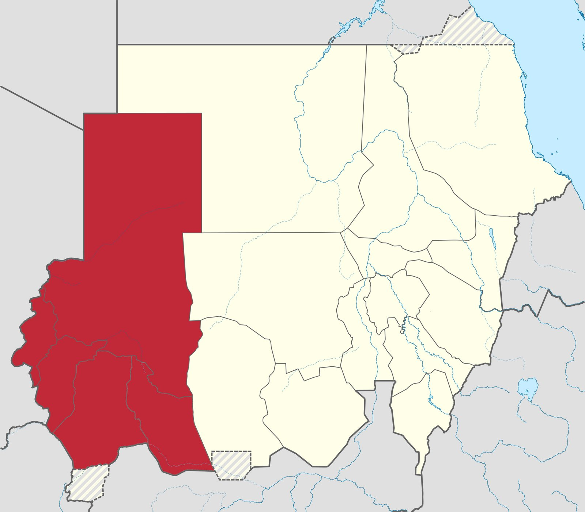

A notícia é o pano de fundo; a banca cobra a estrutura.
1. Herança colonialfronteiras traçadas de fora, Estados que juntam povos rivais
2. Dependência de produtos primáriosvende minério, petróleo e cacau; compra o industrializado
3. Estado frágilgolpes, corrupção, vazio de poder ocupado por milícias e jihadistas
4. Disputa de potênciasFrança saindo; China, Rússia, EUA e Golfo entrando
VÍDEO 1
O Congo de Leopoldo II
BBC News Brasil · 7:39
MAPA
A partilha: 1880 × 1913

Em 1880, quase todo o interior africano era governado por africanos; em 1913, só Etiópia e Libéria seguiam independentes. Rosa: Reino Unido · azul: França · roxo: Bélgica. — davidjl123 / Somebody500 · CC BY-SA 4.0 · Wikimedia Commons
MAPA
Povos × fronteiras

Grupos etnolinguísticos (manchas de cor) e as fronteiras dos Estados (linhas pretas): o mesmo povo dividido entre vários países, vários povos dentro de um. Mapa de 1996 (a RDC ainda aparece como Zaire). — United States. Central Intelligence Agency. · Public domain · Wikimedia Commons
CHAVE 1 · HERANÇA COLONIAL
Partilha e fronteiras artificiais
A partilha
Conferência de Berlim (1884–85): potências europeias fixam as regras da ocupação — nenhum africano na mesa
Em 1914, só Etiópia e Libéria seguiam independentes
Economia colonial: extrair matéria-prima e mandar para a metrópole (borracha, marfim, minério, cacau)
Congo: posse pessoal de Leopoldo II → colônia belga (1908) → independência (1960) → Mobutu/Zaire → RDC (1997)
As fronteiras
Linhas traçadas de fora, muitas retas: separaram um mesmo povo (somalis, bakongos) e juntaram rivais num só Estado
Ex.: Nigéria — hauçá-fulanis, iorubás e ibos → guerra de Biafra (1967–70)
Independências: anos 1950–70; 1960, o «Ano da África» (17 países)
OUA (1963–64): manter as fronteiras coloniais para evitar guerras entre vizinhos → Estados multiétnicos, conflitos internos, secessões (Eritreia 1993, Sudão do Sul 2011)
VÍDEO 2
Minérios de conflito
BBC News Brasil · 2:03
FOTO
Mineração artesanal de cobalto na RDC

Extração manual, sem máquinas: o minério sai em sacos para atravessadores e vai para as baterias de celular e de carro elétrico. — The International Institute for Environment and Development · CC BY 2.5 · Wikimedia Commons
CHAVE 2 · DEPENDÊNCIA
A «maldição dos recursos»
Economia primário-exportadora
Herança colonial: exporta produto primário, importa industrializado — a velha divisão internacional do trabalho
Pauta concentrada em 1 ou 2 produtos: petróleo (Nigéria, Angola), cobre e cobalto (RDC, Zâmbia), cacau (Costa do Marfim, Gana)
Preço decidido lá fora: quando a commodity cai, o país inteiro cai junto
RDC: cerca de 70% do cobalto do mundo — baterias de celular e de carro elétrico
Por que a riqueza não vira desenvolvimento
A renda fica com o Estado e uma elite → corrupção e pouco investimento no resto da economia
Minérios de conflito: grupos armados controlam minas (coltan, ouro, estanho, tungstênio no leste da RDC) e financiam a guerra
Antes: os «diamantes de sangue» de Serra Leoa e Angola
Interesse externo: quem compra o minério nem sempre pergunta de onde veio
VÍDEO 3
A China na África
BBC News Brasil · trecho 0:00–4:30
FOTO
Ferrovia Mombaça–Nairóbi (Quênia)

Construída e financiada pela China e inaugurada em 2017: exemplo de infraestrutura do Cinturão e Rota — e da dívida que vem junto. — TTC dude · CC BY-SA 4.0 · Wikimedia Commons
CHAVE 4 · DISPUTA DE POTÊNCIAS
A China na África
O que a China faz
Maior parceiro comercial da África desde 2009
Compra minério e petróleo; vende manufaturados e máquinas → balança desequilibrada
Cinturão e Rota (2013): portos, ferrovias e estradas — ex.: Mombaça–Nairóbi, Adis Abeba–Djibuti
Empréstimos grandes, sem cobrar democracia («não interferência») — negocia com civis e com ditaduras
Desde 01/05/2026: tarifa zero para importações de 53 países africanos (conferido em 07/10/2026)
O debate
Parceria Sul–Sul? Infraestrutura que o Ocidente não financiou; discurso de «vítimas do imperialismo»
Ou neocolonialismo? Mesma pauta de sempre: a África segue vendendo matéria-prima
Dívida: a Zâmbia deu calote em 2020; críticos falam em «armadilha da dívida» — e o tema é disputado
Até 2050, mais de 1/4 da população mundial será africana: mercado e mão de obra jovem
VÍDEO 4
Sahel, o epicentro do extremismo
BBC News Brasil · trecho 0:30–6:30
MAPA
Sahel: fome, deslocados e violência (2020)

Insegurança alimentar (cores), pessoas deslocadas (círculos) e áreas de violência armada (hachurado). Retrato de 2020: a crise se agravou desde então. — ERCC - Emergency Response Coordination Centre · Public domain · Wikimedia Commons
MAPA
Aliança dos Estados do Sahel

Mali, Burkina Faso e Níger: juntas militares que romperam com a França, se aproximaram da Rússia e saíram da CEDEAO em jan/2025. — Mr DSeven · CC BY 4.0 · Wikimedia Commons
CHAVES 3 E 4 · ESTADO FRÁGIL E POTÊNCIAS
Sahel: golpes, jihadismo e a troca de padrinhos
A região e os golpes
Faixa semiárida entre o Saara e a savana, do Atlântico ao Mar Vermelho; secas e desertificação
Pobreza, natalidade alta, população muito jovem
Cinturão do golpe: Mali (2020 e 2021), Burkina Faso (2022, dois), Níger (2023) — juntas com apoio popular
Jihadismo: grupos ligados à Al-Qaeda (JNIM) e ao Estado Islâmico ocupam o vazio do Estado; Boko Haram no lago Chade
2026: Mali sob ofensiva jihadista e tuaregue (abr); golpe frustrado no Níger (ago)
Sai a França, entra a Rússia
Françafrique: a rede de influência que a França manteve nas ex-colônias (bases, moeda, acordos)
Operação Barkhane (2014–22) não conteve o jihadismo → ressentimento
Tropas francesas saíram de Mali, Burkina, Níger, Chade, Costa do Marfim e Senegal (até 2025)
Wagner → Africa Corps (Estado russo): segurança para as juntas em troca de ouro e acesso; propaganda anti-França
Aliança dos Estados do Sahel (2024): Mali, Burkina e Níger — saíram da CEDEAO em jan/2025
Recursos em jogo: urânio do Níger, ouro
VÍDEO 5
Sudão: como a guerra começou
Fantástico (TV Globo) · trecho 02:00–03:40
MAPA
Darfur, no oeste do Sudão

Darfur em vermelho: berço das milícias Janjaweed, que viraram a RSF. Hoje a RSF controla quase toda a região (conferido em 07/10/2026). — autor no Commons · CC BY-SA 3.0 · Wikimedia Commons
CHAVES 1, 2 E 3
Sudão: a guerra esquecida
De onde vem
Independência em 1956; guerra Norte × Sul → Sudão do Sul se separa em 2011, com cerca de 3/4 do petróleo
Darfur (2003): milícias Janjaweed a serviço do governo → viram as Forças de Apoio Rápido (RSF) em 2013, sob Hemedti
2019: cai o ditador Omar al-Bashir → transição militares + civis
2021: exército e RSF dão golpe juntos → abr/2023: os antigos aliados entram em guerra (Burhan × Hemedti)
Hoje (conferido em 07/10/2026)
Sem cessar-fogo. A RSF tomou El Fasher (out/2025) e controla quase todo o Darfur; o exército retomou Cartum
Mais de 13 milhões de deslocados (dentro e fora do país) — a maior crise de deslocamento do planeta; fome
O ouro financia a guerra; a ONU documentou indícios de apoio dos Emirados à RSF (eles negam)
«Guerra esquecida»: muito menos cobertura que Ucrânia e Gaza
A reportagem só pôde mostrar o lado do exército
INTEGRAÇÃO
A África se integra?
Blocos
União Africana (2002, sucede a OUA): 55 membros
Blocos regionais: CEDEAO (oeste), SADC (sul), Comunidade da África Oriental
AfCFTA — Zona de Livre Comércio Continental Africana: em vigor desde 2021, cerca de 50 países ratificaram; a maior do mundo em número de países
Objetivo: cortar tarifas e barreiras não tarifárias, industrializar, agregar valor
Por que é difícil
Comércio entre os próprios africanos: cerca de 15% do total (na União Europeia, mais de 60%)
Economias parecidas: todos vendem produto primário, ninguém compra do vizinho
Falta infraestrutura: ferrovias e estradas foram feitas para ligar a mina ao porto, não um país ao outro
BRICS: África do Sul (2011), Egito e Etiópia (2024) · Sul Global: ex-colônias buscando voz fora do eixo EUA–Europa
QUESTÕES 1 A 10
28:00
CORREÇÃO
Cada questão, qual chave?
Gabarito
1 C · 2 D · 3 C · 4 D · 5 E
6 E · 7 E · 8 C · 9 B · 10 B
Chaves
1–2 · herança colonial (Fuvest mapa, Uerj canção)
3–5 · dependência e China (FGV cobalto, Enem, Fuvest gráficos)
6–8 · Estado frágil (Fuvest Sahel ×2, Uerj Sudão)
9–10 · integração (Unesp, UEA)
FECHAMENTO
As quatro chaves
1. Herança colonialCongo, fronteiras artificiais, Sudão do Sul
2. Dependência de produtos primárioscobalto, coltan, ouro, cacau
3. Estado frágilgolpes no Sahel, guerra no Sudão
4. Disputa de potênciasChina, Rússia/Africa Corps, saída da França